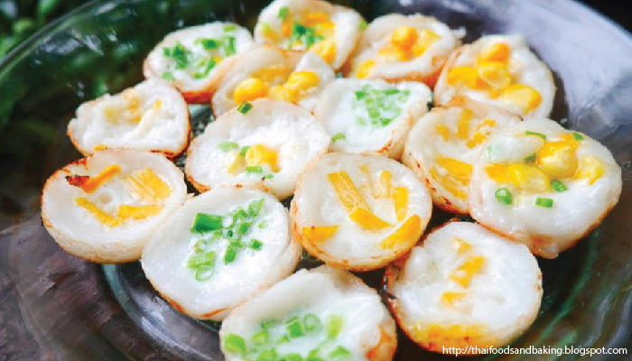

ประเภทของขนมไทย
แบ่งตามวิธีการทำให้สุกได้ดังนี้
ขนมที่ทำให้สุกด้วยการกวน ส่วนมากใช้กระทะทอง กวนตั้งแต่เป็นน้ำเหลวใสจนงวด แล้วเทใส่พิมพ์หรือถาดเมื่อเย็นจึงตัดเป็นชิ้น เช่น
ตะโก้
ขนมลืมกลืน
ขนมเปียกปูน
ขนมศิลาอ่อน
และผลไม้กวนต่าง ๆ รวมถึง
ข้าวเหนียวแดง
ข้าวเหนียวแก้ว
และ
กะละแม
ขนมที่ทำให้สุกด้วยการนึ่ง ใช้
ลังถึง
บางชนิดเทส่วนผสมใส่ถ้วยตะไลแล้วนึ่ง บางชนิดใส่ถาดหรือพิมพ์ บางชนิดห่อด้วยใบตองหรือใบมะพร้าว เช่น
ช่อม่วง
ขนมชั้น
ข้าวต้มผัด
สาลี่
อ่อน
สังขยา
ขนมกล้วย
ขนมตาล
ขนมใส่ไส้
ขนมเทียน
ขนมน้ำดอกไม้
ข้าวเกรียบปากหม้อ
ขนมที่ทำให้สุกด้วยการเชื่อม เป็นการใส่ส่วนผสมลงในน้ำเชื่อมที่กำลังเดือดจนสุก ได้แก่
ทองหยอด
ทองหยิบ
ฝอยทอง
เม็ดขนุน
กล้วยเชื่อม จาวตาลเชื่อม
ขนมที่ทำให้สุกด้วยการทอด เป็นการใส่ส่วนผสมลงในกระทะที่มีน้ำมันร้อนๆ จนสุก เช่น กล้วยทอด ข้าวเม่าทอด
ขนมกง
ขนมค้างคาว
ขนมฝักบัว
ขนมนางเล็ด
ขนมที่ทำให้สุกด้วยการนึ่งหรืออบ ได้แก่ ขนมหม้อแกง ขนมหน้านวล ขนมกลีบลำดวน ขนมทองม้วน สาลี่แข็ง นอกจากนี้ อาจรวม
ขนมครก
ขนมเบื้อง
ขนมดอกลำเจียก
ที่ใช้ความร้อนบนเตาไว้ในกลุ่มนี้ด้วย
ขนมที่ทำให้สุกด้วยการต้ม ขนมประเภทนี้จะใช้หม้อหรือกระทะต้มน้ำให้เดือด ใส่ขนมลงไปจนสุกแล้วตักขึ้น นำมาคลุกหรือโรยมะพร้าว ได้แก่
ขนมถั่วแปบ
ขนมต้ม
ขนมเหนียว
ขนมเรไร
นอกจากนี้ยังรวมขนมประเภทน้ำ ที่นิยมนำมาต้มกับกะทิ หรือใส่แป้งผสมเป็นขนมเปียก และขนมที่กินกับน้ำเชื่อมและน้ำกะทิ เช่น กล้วยบวชชี มันแกงบวด สาคูเปียก
ลอดช่อง
ซ่าหริ่ม
